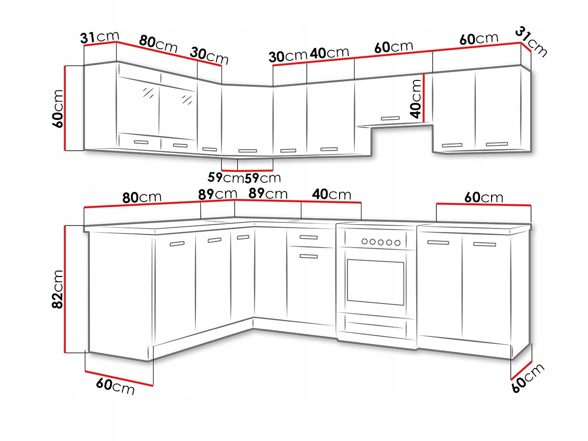
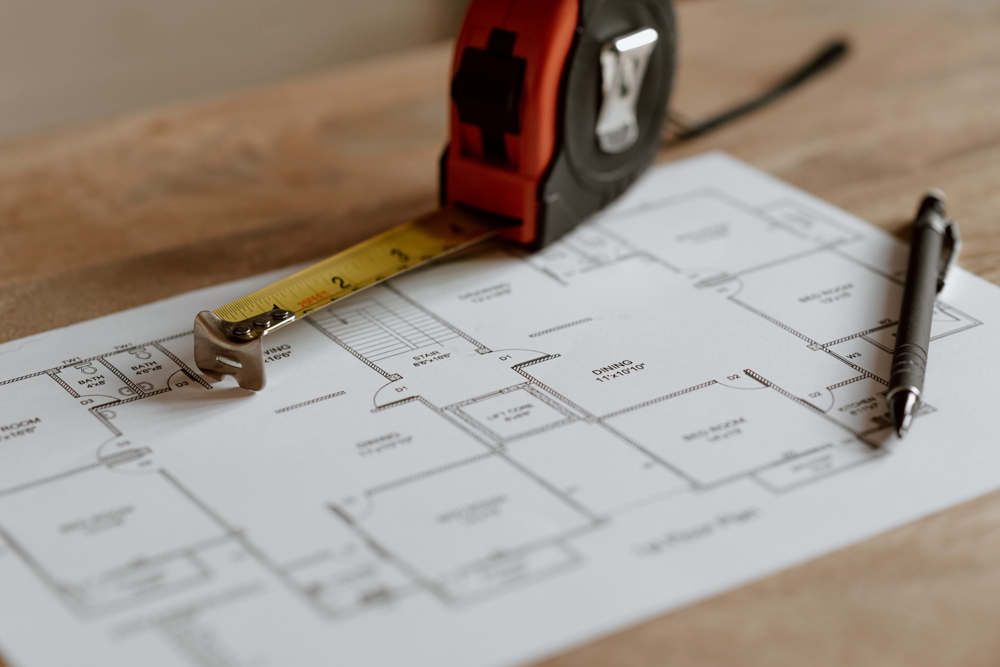

Meble Stanley. Meble na wymiar
Realizujemy zamówienia od rozmowy i wykonania projektu po montaż.
Gwarantujemy:
- wysokiej jakości materiały
- nowoczesne rozwiązania
- pomiar i projekt mebli
- transport oraz montaż
- profesjonalne doradztwo na każdym etapie realizacji
- umowę
- niezmienności ceny w trakcie realizacji
- w okresie gwarancji bezpłatną regulację systemów
- pisemną gwarancję na okres trzech lat
- dożywotnią gwarancję na systemy Firmy Blum
Nasze meble na wymiar mają solidną konstrukcję, wykonywane są z najlepszych materiałów.
Oferujemy profesjonalną obsługę:
- Pomiary
- Projekt
- Wykonawstwo
- Montaż mebli u Klienta
W pracy kierujemy się dbałością o estetykę i trwałość mebli.

